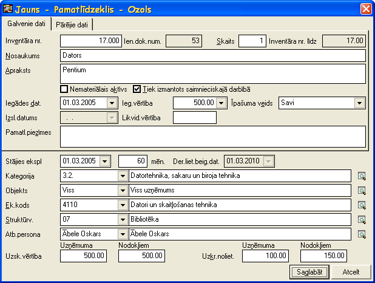

Pamatlīdzekļu atlikumu ievades dokuments¶
Pamatlīdzekļu atlikumu ievades dokuments paredzēts pamatlīdzekļu sākuma atlikumu ievadei uzsākot darbu ar sistēmu. Šādu sistēmā pievienotupamatlīdzekļu datiatskaitēs vienmēr tiek rādīti kā sākuma atlikumi. Dokuments pēc saglabāšanas ir pieejams Pamatlīdzekļu dokumentu sarakstā .
Pievienojot jaunu dokumentu jāizvēlas pamatlīdzekļu dokumenta veids Pamatlīdzekļu atlikumu ievades dokuments.

- scale
100%
Numurs - jānorāda pamatlīdzekļa dokumenta numurs. Šis numurs strādājot ar sistēmu tiek piešķirts automātiski pēc iebūvētā:doc:numeratora<139> . Visiem pamatlīdzekļu dokumentiem ir viena numerācija.
Paskaidrojums - jānorāda dokumenta paskaidrojums.
Piezīmes - iespējams norādīt piezīmes par dokumentu un šīs piezīmes domātas tikai grāmatvedim. Pamatlīdzekļu atskaitēs šīs piezīmes netiek uzrādītas.
Saglabāt - pēc dokumenta datu un pamatlīdzekļu (skat. zemāk Pamatlīdzekļu pievienošana Pamatlīdzekļu atlikumu ievades dokumentam ) pievienošanas jāspiež šī poga lai saglabātu izveidoto dokumentu.

- scale
100%
Lai izveidotā Pamatlīdzekļu atlikumu ievades dokumenta dati stātos spēkā obligāti pēc saglabāšanas dokuments ir jāapstiprina ar funkciju .. image:: images_ozols/24715.gif :scale: 100% .
Pamatlīdzekļu pievienošana Pamatlīdzekļu atlikumu ievades dokumentam¶
Pēc dokumenta datu aizpildīšanas ir jāaizpilda dati par pamatlīdzekļiem. Dokumentam jaunu pamatlīdzekli pievieno atvērtā Pamatlīdzekļu atlikumu ievadesdokumenta formā ar funkciju .. image:: images_ozols/24708.png :scale: 100% .
Datus par pamatlīdzekli iespējams labot atvērtā Pamatlīdzekļu atlikumu ievades dokumenta formā ar funkciju .. image:: images_ozols/24709.png :scale: 100% .
Pamatlīdzekli dzēš atvērtā Pamatlīdzekļu atlikumu ievades dokumenta formā ar funkciju .. image:: images_ozols/24719.gif :scale: 100% .
- scale
100%

- scale
100%
Inventāra nr. - jānorāda pamatlīdzekļa inventāra numurs. Numurs sistēmā tiek pēc secības piešķirts automātiski nākošais, ko lietotājs var labot. Pamatlīdzekļu numurā var izmantot tikai ciparus.
Ien.dok.num. - Ienākošā dokumenta numurs ir informatīvs lauks un lietotājs to mainīt nevar.
Skaits - jānorāda pamatlīdzekļu skaits. Parasti šis skaits ir 1, ko sistēma arī automātiski piedāvā, bet, ja jāņem uzskaitē vairāki vienādi pamatlīdzekļi, tad šo skaitu ir iespējams labot un pēc kartiņas saglabāšanas sistēma uzģenerēs pēc norādītā skaita vienādas pamatlīdzekļu kartiņas piešķirot katrai savuunikālu inventāra numuru.
Inventāra nr. līdz -
Nosaukums - jānorāda pamatlīdzekļa nosaukums.
Apraksts - jānorāda detalizētāka informācija par pamatlīdzekli, ja nepieciešams (piem. detalizētāka atrašanās vieta, pamatlīdzekļa faktiskais lietotājs, utt.).
Nemateriālais aktīvs - šī izvēles rūtiņa ir jāatzīmē, ja pamatlīdzeklis ir nemateriālais aktīvs.
Tiek izmantots saimnieciskajā darbībā - šī izvēles rūtiņa jāatzīmē, ja pamatlīdzeklis tiek izmantots saimnieciskajā darbībā.
Iegādes dat. - jānorāda faktiskais iegādes datums.
Ieg. vērtība - jānorāda pamatlīdzekļa iegādes vērtība.
Īpašuma veids - jānorāda pamatlīdzekļa īpašuma veids .
Izsl.datums - šis lauks tiek aizpildīts automātiski pēc pamatlīdzekļa izslēgšanas un lietotājs to mainīt nevar.
Likvid.vērtība - jānorāda likvidācijas vērtība, ja tā ir vairāk nekā nulle.
Pamatl.piezīmes - iespējams norādīt piezīmes parpamatlīdzekli un šīs piezīmes domātas tikai grāmatvedim. Pamatlīdzekļu atskaitēs šīs piezīmes netiek uzrādītas.
Stājies ekspl. - jānorāda pamatlīdzekļa faktiskais stāšanās ekspluatācijā datums.
mēn. - jānorāda derīgās lietošanas mēneši. Šis lauks tiek aizpildīts automātiski pievienojot Pamatlīdzeklim kategoriju , bet lietotājam ir iespēja derīgās lietošanas mēnešu skaitu mainīt atbilstoši uzņēmumā noteiktajam laikam.
Der.liet.beig.dat. - šis lauks nav jāaizpilda un ir informatīvs. Dati tiek rādīti ņemot vērā Stājies ekspl. un mēn. norādītos datus.
Kategorija - jānorāda Pamatlīdzekļa kategorija . Caur Pamatlīdzekļu kategoriju pamatlīdzeklim tiek nodefinēts pamatlīdzekļa uzskaites konts, nolietojuma konts, izdevumu konts un derīgās lietošanas laiks.
Objekts - jānorāda pamatlīdzekļa objekts .
Dimensijas - iespēja norādīt uzņēmumā izmantojamo dimensiju vērtības (piem. ekonomiskās klasifikācijas kods, valdības funkcija, projekts, finansējums, utt.).
Struktūrv. - jānorāda struktūrvienība.
Atb.persona - jānorāda materiāli atbildīgā persona .
Uzsk.vērtība - jānorāda uzskaites vērtība finanšu vajadzībām un jānorāda uzskaites vērtība nodokļu vajadzībām.
Uzkr.noliet. - jānorāda uzkrātais nolietojums finanšu vajadzībām un uzkrātais nolietojums nodokļu vajadzībāmuz datumu, kad tiek uzsāktsdarbs arsistēmu.
Piegādātājs - iespēja norādīt pamatlīdzekļa:doc:Piegādātāju<112> .
Līgums - iespēja norādīt līguma numuru.
Garantijas term. - iespēja norādīt pamatlīdzekļa garantijas termiņu.
Piegādātāja valsts - iespēja norādīt piegādātāja:doc:valsti<103> .
Apdr.sabiedr. - iespēja norādīt Apdrošināšanas sabiedrību .
Max.atlīdzība - iespēja norādīt apdrošināšanas maksimālo atlīdzību.
Garantijas term. - iespēja norādīt maksimālās atlīdzības garantijas termiņu.
Pazīme - iespēja norādīt Pamatlīdzekļa pazīmi .
Platība - ja pamatlīdzeklis ir zeme vai nekustamais īpašums, tad ir iespēja norādīt platību.
Kadastra nr. - ja pamatlīdzeklis ir zeme vai nekustamais īpašums, tad ir iespēja norādīt kadastra numuru.
Saglabāt - jāspiež šī poga lai saglabātu ievadītos datus par pamatlīdzekli.
Atcelt - jāspiež šī poga, ja lietotājs nevēlas saglabāt aizpildītos datus par pamatlīdzekli.